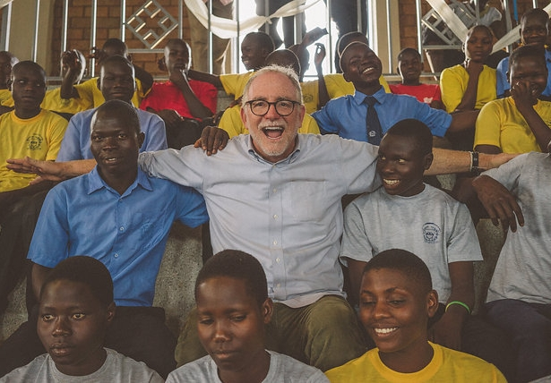

Tribute to Bob Goff

Bob is founder of Love Does, a nonprofit human rights organization operating in Uganda, India, Iraq, Nepal, Afghanistan and Somalia.
The Life of Bob
- Born in California on February 22, 1959
- Goff founded Goff and Dewalt, LLP in 1998 as a construction defect attorney
- In 2002 Bob Goff started Love Does when he traveled to India and was inspired to join the fight to end sex trafficking.
- In 2007 he began working in Uganda since to promote human rights and education by opening a school, with the majority of the students being child soldiers, orphans, or from backgrounds of extreme poverty.
- From then on Bob has continued to expand schools, hospitals, and children homes throughtout the world with his latest in 2020 being a school in in the congo